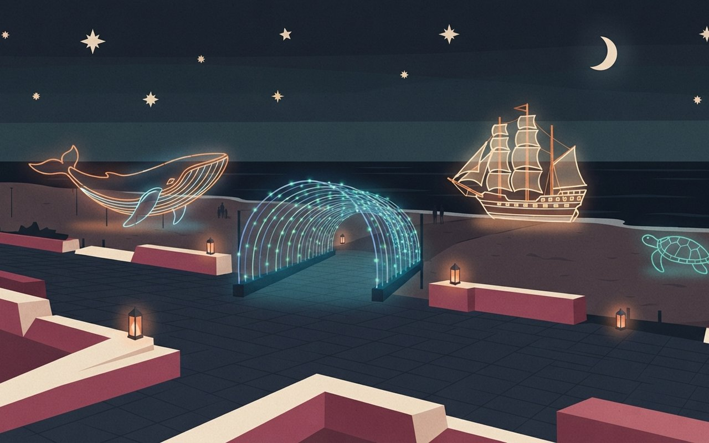

제13회 해운대 빛축제 28일 점등, 내년 1월 10일까지 — 30m 빛의 터널·백사장 12m 배 조형물, 주말엔 체험
제13회 해운대 빛축제가 11월 28일(토) 점등식을 열고 2027년 1월 10일까지 이어진다. 해운대스퀘어(구남로)에서 해수욕장 백사장까지가 무대이고, 올해 주제는 '딥 다이브 해운대(Deep Dive Haeundae)'다(파이낸셜뉴스·서울경제).
구남로에는 30m 길이의 '빛의 터널'과 최대 6m 높이의 크리스마스 트리 숲이, 백사장에는 12m 배 조형물과 고래·잠수함·바다거북 아치가 선다. 관람객 손길에 따라 색이 바뀌는 인터랙티브 조명도 있고, 성탄 무렵에는 스노우 머신을 가동할 예정이다. 주말에는 '야광 바다팔찌'와 '어항램프 무드등 만들기' 체험이 열린다(서울경제). 점등 시간과 체험 요금은 기사에 없다 — 공식 안내 확인 권장.
- 기간·장소11/28(토) 점등식 ~ 2027/1/10 · 해운대스퀘어(구남로)~해수욕장 백사장
- 조형물빛의 터널 30m · 크리스마스 트리 숲(최대 6m) · 백사장 배 조형물 12m · 고래·잠수함·바다거북 아치
- 체험주말 '야광 바다팔찌'·'어항램프 무드등 만들기' · 인터랙티브 조명 · 성탄 무렵 스노우 머신(예정)
- 주의점등 시간·점등식 프로그램·체험 요금은 기사에 없음 ⚠ 변동 가능 · 공식 홈페이지 확인 권장
올해는 바다 속으로 들어가는 콘셉트라 구남로의 터널과 트리를 지나 백사장의 배·고래 조형물로 이어지는 동선이 하나의 이야기처럼 짜였다. 해운대역 쪽 구남로에서 시작해 바다 방향으로 걸으면 순서대로 볼 수 있다. 체험은 주말에만 열린다.
해운대 빛축제 28일 점등,
내년 1월 10일까지
구남로에서 백사장까지 빛의 터널과 트리 숲, 배·고래 조형물이 이어져요. 주말엔 야광 팔찌·무드등 만들기 체험도 있고, 점등 시간은 공식 안내를 확인하세요.
부산 해운대
2026-11-28~2027-01-10
A seaside boulevard at night leading to a sandy beach, an arched tunnel of blue and teal lights, glowing whale and sea turtle shaped light sculptures on the sand, a large light sculpture of a ship by the sea, no people faces, flat illustration, no text, no logos
